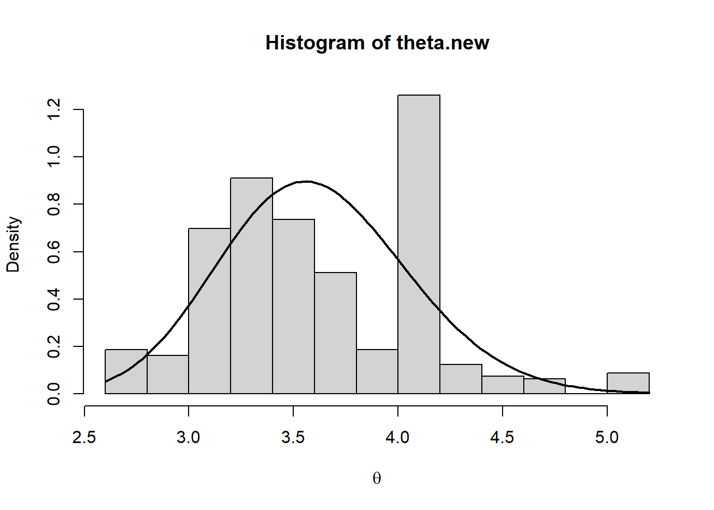
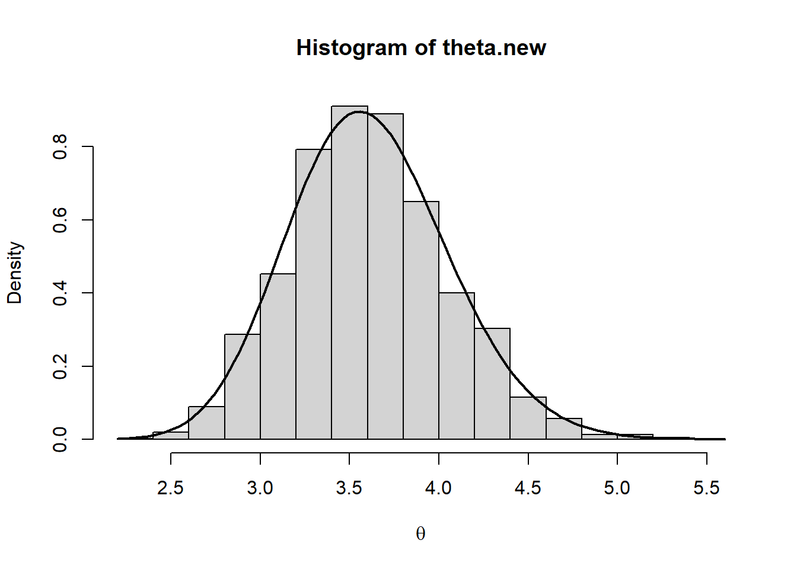

rm(list = ls())
B <- 1000
warmup <- 0.6
# Prior hyperparameters:
a <- 10
b <- 3Script 4 - MCMC - Metropolis Hasting
Let’s suppose that the posterior is a Gamma(alpha.post, beta.post) and that we cannot compute the normalizing constant (i.e., we know only the kernel).
We choose a an Exponential distribution with mean equal to the previous value of the chain as the proposal distribution.
# Generating data:
set.seed(42)
n <- 15
sum_yi <- sum(rpois(n, 3))We initialize the MCMC with an initial value:
k <- 0
theta <- numeric(B)
theta.mean <- numeric(B)
theta[1] <- 1
theta.mean[1] <- theta[1]Now, let’s implement the Metropolis Hasting algorithm. The main step here is to compute the probability \(\alpha\left(\theta^{(b)}, \theta^*\right)\), which has the following expression:
\[\begin{equation*} \alpha\left(\theta^{(b)}, \theta^*\right) = \begin{cases} \min\left(1, \frac{\pi(\theta^*|\textbf{y})q(\theta^{(b)}|\theta^*)}{\pi(\theta^{(b)}|\textbf{y})q(\theta^{*}|\theta^{(b)})} \right) & \text{ if } {\pi(\theta^{(b)}|\textbf{y})q(\theta^{*}|\theta^{(b)})} \neq 0 \\ 1 & \text{ otherwise} \end{cases}. \end{equation*}\]
In this example, \[\frac{\pi(\theta^*|\textbf{y})q(\theta^{(b)}|\theta^*)}{\pi(\theta^{(b)}|\textbf{y})q(\theta^{*}|\theta^{(b)})} = \left(\frac{\theta^*}{\theta^{(b)}}\right)^{\alpha + \sum_{i=1}^n y_i -2} e^{-(\beta+n)\left(\theta^* - \theta^{(b)}\right)} e^{-\frac{\theta^{(b)}}{\theta^*} + \frac{\theta^*}{\theta^{(b)}}}.\]
for(bb in 2:B){
theta_star <- rexp(1, rate=1/theta[bb-1])
alpha_prob <-
(theta_star/theta[bb-1])^(a+sum_yi-2)*
exp(-(b+n)*(theta_star-theta[bb-1]))*
exp(-theta[bb-1]/theta_star + theta_star/theta[bb-1])
alpha_prob <- min(alpha_prob, 1)
# Acceptance ?
if(runif(1) <= alpha_prob){
theta[bb] <- theta_star
k <- k + 1
} else {
theta[bb] <- theta[bb-1]
}
theta.mean[bb] <- mean(theta[2:bb])
}# Acceptance rate:
k/B[1] 0.131Traceplots:
par(mfrow=c(1,2))
plot(theta, type="l", col="gray")
points(theta.mean, type="l")
acf(theta)par(mfrow=c(1,1))We remove the warm-up period…
m <- warmup*B
theta.new <- theta[m:B]… and compare the real and simulated posterior:
hist(theta.new,prob=T,xlab=expression(theta))
curve(dgamma(x, a+sum_yi, rate=b+n),add=T,lwd=2)
par(mfrow=c(1,1))The comparison suggests that the simulated posterior is not a good approximation of the true theoretical one. As an additional red-flag, we note that the acceptance rate is quite small. Thus, to obtain a reliable sample from the stationary distribution, we have to increase the length of the chain and include a thin period:
B <- 50000
warmup <- 0.6
k <- 0
theta <- numeric(B)
theta.mean <- numeric(B)
theta[1] <- 1
theta.mean[1] <- theta[1]
for(bb in 2:B){
theta_star <- rexp(1, rate=1/theta[bb-1])
alpha_prob <-
(theta_star/theta[bb-1])^(a+sum_yi-2)*
exp(-(b+n)*(theta_star-theta[bb-1]))*
exp(-theta[bb-1]/theta_star + theta_star/theta[bb-1])
alpha_prob <- min(alpha_prob,1)
if(runif(1) <= alpha_prob){
theta[bb] <- theta_star
k <- k + 1
} else {
theta[bb] <- theta[bb-1]
}
theta.mean[bb] <- mean(theta[2:bb])
}Acceptance rate:
k/B[1] 0.1421par(mfrow=c(1,2))
plot(theta, type="l", col="gray")
points(theta.mean, type="l")
acf(theta)par(mfrow=c(1,1))# Removing the warm up period:
m <- round(warmup*B)
thin <- 10
theta.new <- theta[seq(m, B, thin)]
# Comparing the real and simulated posterior:
hist(theta.new,prob=T,xlab=expression(theta))
curve(dgamma(x, a+sum_yi, rate=b+n),add=T,lwd=2)
par(mfrow=c(1,1))HOMEWORK:
Consider the same scenario of the latter example. Implement a Metropolis-Hasting algorithm by considering an independent MH generating the candidate theta_star from an exponential distribution with mean \(X\). Consider different values for \(X\) to investigate whether it affects the acceptance rate.
Metropolis Hasting for a Logistic Regression model
In this Section, we consider the cardiac dataset. Let’s consider \(Y_i \sim Bernoulli (\theta_i)\), where the probability of success depends on a quantitative covariate \(X\) by means of the logit link function: \[logit(\theta_i) = \log\left(\frac{\theta_i}{1-\theta_i}\right) = \alpha + \beta x_i.\]
rm(list=ls())
cardiac <- read.csv("data/cardiac.csv", header=T, sep=";")
str(cardiac)'data.frame': 100 obs. of 2 variables:
$ Age: int 20 23 24 25 25 26 26 28 28 29 ...
$ Chd: int 0 0 0 0 1 0 0 0 0 0 ...y <- cardiac$Chd
x <- cardiac$Age
n <- nrow(cardiac)
plot(x, y, pch=20)We fit the classical (frequentist!) logistic regression through the glm() function. This is going to be useful to set hyperparameters by following Robert & Casella.
summary(glm(y ~ x, family="binomial"))
Call:
glm(formula = y ~ x, family = "binomial")
Coefficients:
Estimate Std. Error z value Pr(>|z|)
(Intercept) -5.30945 1.13365 -4.683 2.82e-06 ***
x 0.11092 0.02406 4.610 4.02e-06 ***
---
Signif. codes: 0 '***' 0.001 '**' 0.01 '*' 0.05 '.' 0.1 ' ' 1
(Dispersion parameter for binomial family taken to be 1)
Null deviance: 136.66 on 99 degrees of freedom
Residual deviance: 107.35 on 98 degrees of freedom
AIC: 111.35
Number of Fisher Scoring iterations: 4B <- 10000
warmup <- 0.6For selecting the hyperparameters, we follow Robert & Casella:
b <- exp(-5.30945+.577216)
# From GLM estimates:
m_norm <- 0.1109
v_norm <- .02406^2k <- 0
alpha <- numeric(B)
beta <- numeric(B)
alpha.mean <- numeric(B)
beta.mean <- numeric(B)
set.seed(42)
alpha[1] <- 0 #log(rexp(1, rate = 1/b))
alpha.mean[1] <- alpha[1]
beta[1] <- rnorm(1, m_norm, sqrt(v_norm))
beta.mean[1] <- beta[1]The likelihood function is defined as \[L(\textbf{y} | \alpha, \beta) = \prod_{i=1}^n \left(\frac{\exp(\alpha+\beta x_i)}{1+\exp(\alpha+\beta x_i)}\right)^{y_i} \left(\frac{1}{1+\exp(\alpha+\beta x_i)}\right)^{1-y_i}.\]
Likelihood <- function(alpha, beta, y, x){
eta <- alpha + beta*x
theta <- (exp(eta)/(1+exp(eta)))
L <- prod((theta^y)*((1-theta)^(1-y)))
return(L)
}Metropolis Hasting:
set.seed(42)
for(bb in 2:B){
alpha_star <- log(rexp(1, rate = 1/b))
beta_star <- rnorm(1, m_norm, sqrt(v_norm))
num <- Likelihood(alpha_star, beta_star, y, x)*dnorm(beta[bb-1], m_norm, sqrt(v_norm))
den <- Likelihood(alpha[bb-1], beta[bb-1], y, x)*dnorm(beta_star, m_norm, sqrt(v_norm))
alpha_prob <- min(num/den, 1)
if(runif(1) <= alpha_prob){
alpha[bb] <- alpha_star
beta[bb] <- beta_star
k <- k + 1
} else {
alpha[bb] <- alpha[bb-1]
beta[bb] <- beta[bb-1]
}
alpha.mean[bb] <- mean(alpha[2:bb])
beta.mean[bb] <- mean(beta[2:bb])
}Acceptance rate:
# Acceptance rate:
k/B[1] 0.1851par(mfrow=c(1,2))
plot(alpha, type="l", col="gray")
points(alpha.mean, type="l")
plot(beta, type="l", col="gray")
points(beta.mean, type="l")par(mfrow=c(1,1))
par(mfrow=c(1,2))
acf(alpha)
acf(beta)par(mfrow=c(1,1))Removing the warm-up period:
m <- round(warmup*B)
thin <- 15
alpha.new <- alpha[seq(m, B, thin)]
beta.new <- beta[seq(m, B, thin)]mean(alpha)[1] -5.209281mean(beta)[1] 0.1087805quantile(beta, probs = c(.025, .975)) 2.5% 97.5%
0.07594791 0.14370394 par(mfrow=c(1,2))
hist(alpha.new,prob=T,xlab=expression(theta))
lines(density(alpha.new),lwd=2)
hist(beta.new,prob=T,xlab=expression(theta))
lines(density(beta.new),lwd=2)par(mfrow=c(1,1))range(x)[1] 20 69theta_i <- matrix(NA, ncol=length(unique(x)), nrow=length(alpha.new))
for(i in 1:length(unique(x))){
eta <- alpha.new + beta.new*unique(x)[i]
theta_i[,i] <- exp(eta)/(1+exp(eta))
}
head(theta_i) [,1] [,2] [,3] [,4] [,5] [,6]
[1,] 0.05378335 0.07191785 0.07912527 0.08698729 0.09554944 0.11495722
[2,] 0.04056338 0.05715869 0.06398824 0.07157188 0.07997751 0.09953726
[3,] 0.04280782 0.05845488 0.06477131 0.07171829 0.07934713 0.09686331
[4,] 0.04796769 0.06452095 0.07113386 0.07836775 0.08626897 0.10426292
[5,] 0.09258941 0.11535476 0.12396292 0.13311680 0.14283642 0.16404534
[6,] 0.06032458 0.07641837 0.08260637 0.08924703 0.09636545 0.11213613
[,7] [,8] [,9] [,10] [,11] [,12] [,13]
[1,] 0.1258928 0.1377069 0.1641237 0.1787916 0.1944654 0.2111599 0.2288803
[2,] 0.1108351 0.1232399 0.1516363 0.1677460 0.1851936 0.2040111 0.2242145
[3,] 0.1068590 0.1177517 0.1424342 0.1563185 0.1712860 0.1873683 0.2045879
[4,] 0.1144507 0.1254946 0.1503241 0.1641877 0.1790604 0.1949661 0.2119200
[5,] 0.1755659 0.1877138 0.2139233 0.2279913 0.2426988 0.2580380 0.2739959
[6,] 0.1208380 0.1301161 0.1504904 0.1616268 0.1734190 0.1858808 0.1990225
[,14] [,15] [,16] [,17] [,18] [,19] [,20]
[1,] 0.2476211 0.2673643 0.2880790 0.3097200 0.3322282 0.3555296 0.3795364
[2,] 0.2458008 0.2687455 0.2929998 0.3184898 0.3451148 0.3727482 0.4012386
[3,] 0.2229557 0.2424700 0.2631139 0.2848545 0.3076415 0.3314066 0.3560634
[4,] 0.2299270 0.2489807 0.2690617 0.2901365 0.3121572 0.3350603 0.3587673
[5,] 0.2905542 0.3076890 0.3253710 0.3435648 0.3622297 0.3813196 0.4007833
[6,] 0.2128504 0.2273664 0.2425672 0.2584443 0.2749834 0.2921640 0.3099590
[,21] [,22] [,23] [,24] [,25] [,26] [,27]
[1,] 0.4041476 0.4292508 0.4547232 0.4804348 0.5062505 0.5320329 0.5576453
[2,] 0.4304123 0.4600774 0.4900280 0.5200505 0.5499288 0.5794512 0.6084160
[3,] 0.3815080 0.4076198 0.4342640 0.4612936 0.4885527 0.5158800 0.5431127
[4,] 0.3831851 0.4082068 0.4337135 0.4595763 0.4856587 0.5118195 0.5379156
[5,] 0.4205651 0.4406054 0.4608412 0.4812068 0.5016351 0.5220579 0.5424073
[6,] 0.3283351 0.3472524 0.3666647 0.3865195 0.4067590 0.4273201 0.4481354
[,28] [,29] [,30] [,31] [,32] [,33] [,34]
[1,] 0.5829548 0.6078346 0.6321666 0.6558438 0.6787713 0.7008680 0.7220672
[2,] 0.6366369 0.6639473 0.6902039 0.7152887 0.7391102 0.7616027 0.7827262
[3,] 0.5700902 0.5966577 0.6226700 0.6479945 0.6725132 0.6961250 0.7187464
[4,] 0.5638057 0.5893525 0.6144263 0.6389072 0.6626871 0.6856713 0.7077801
[5,] 0.5626161 0.5826192 0.6023541 0.6217616 0.6407868 0.6593793 0.6774937
[6,] 0.4691340 0.4902425 0.5113859 0.5324886 0.5534757 0.5742739 0.5948125
[,35] [,36] [,37] [,38] [,39] [,40] [,41]
[1,] 0.7423163 0.7615773 0.7798257 0.7970495 0.8132486 0.8284331 0.8426218
[2,] 0.8024634 0.8208182 0.8378121 0.8534821 0.8678768 0.8810543 0.8930795
[3,] 0.7403120 0.7607743 0.7801032 0.7982845 0.8153184 0.8312181 0.8460074
[4,] 0.7289485 0.7491270 0.7682809 0.7863893 0.8034447 0.8194509 0.8344224
[5,] 0.6950904 0.7121348 0.7285985 0.7444585 0.7596973 0.7743029 0.7882682
[6,] 0.6150245 0.6348473 0.6542232 0.6731004 0.6914331 0.7091819 0.7263138
[,42] [,43]
[1,] 0.8558413 0.8997443
[2,] 0.9040215 0.9383865
[3,] 0.8597195 0.9046779
[4,] 0.8483820 0.8947906
[5,] 0.8015908 0.8485484
[6,] 0.7428026 0.8020143# Empty plot:
plot(0, 1, xlab = "Age", ylab = "P(Y = 1 | Age)",
ylim=c(0,1), xlim=range(x), col="white")
for(i in 1:length(unique(x))){
xx <- unique(x)[i]
points(rep(xx, length(theta_i[,i])),
theta_i[,i], col="gray", pch=20)
}
points(x, y, pch=20)
abline(h = .5, col = "#D55E00", lty = "dashed")
x_grid <- seq(min(x)-1, max(x)+1, by = .5)
theta_grid <- numeric(length(x_grid))
for(i in 1:length(x_grid)){
eta <- alpha.new + beta.new*x_grid[i]
theta_grid[i] <- mean(exp(eta)/(1+exp(eta)))
}
points(x_grid, theta_grid, type = "l", lwd = 1.5)